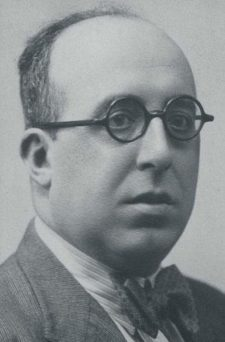
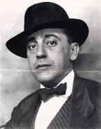
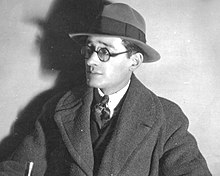
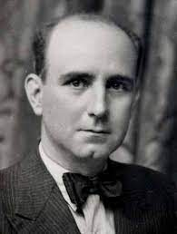

Repositorio de autores galegos
Otero Pedrayo

- Nacimiento: 5 de marzo de 1888 en ourense
- Fallecimiento: 10 de abril de 1976 en ourense
- Oficio: Escritor(de prosa), Diputado, Profesor
- Primer libro: Pantelas, home libre(1925)
- Libro mas importante: Os camiños da vida (1928)
- Fuente
Ramon Cabanillas

- Nacimiento: 3 de junio de 1876
- Fallecimiento: 9 de noviembre de 1959
- Oficio: Escritor(de prosa y poesia)
- Primer libro: No desterro(1913)
- Primer poema: Suevia ("Lonxe", 1910)
- Obra mas importante : Antífona da cantiga (1951)
- Fuente
Vicente Risco

- Nacimiento: 1 de octubre de 1884
- Fallecimiento: 30 de abril de 1936
- Oficio: Escritor(de prosa)
- Primer libro: A trabe de ouro e a trabe de alquitrán(1925)
- Obra mas importante : O lobo da xente(1925)
- Fuente
Florentino Cuevillas

- Nacimiento: 14 de noviembre de 1886
- Fallecimiento: 30 de julio de 1958
- Oficio: Escritor(de prosa)
- Primer libro: Prosas Galegas, 1920 - 1958(1962)
- Obra mas importante : Prosas Galegas, 1920 - 1958(1962)
- Fuente